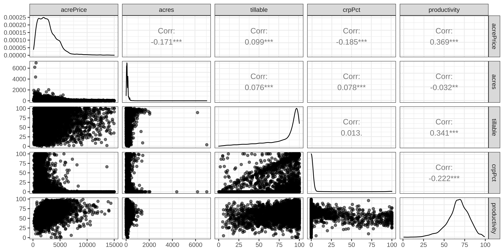
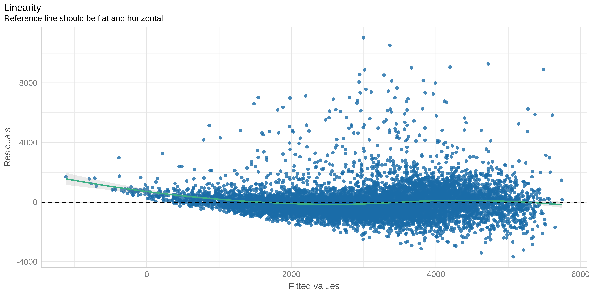

library(tidyverse) # for data wrangling
library(alr4) # for the data sets #
library(GGally)
library(parameters)
library(performance)
library(see)
library(car)
library(broom)
library(modelsummary)
library(texreg)
ggplot2::theme_set(ggplot2::theme_bw())
knitr::opts_chunk$set(
fig.width = 8,
fig.asp = 0.5,
fig.retina = 3,
dpi = 300,
out.width = "100%",
message = FALSE,
echo = TRUE,
cache = TRUE
)
my_gof <- function(fit_obj, digits = 4) {
sum_fit <- summary(fit_obj)
stars <-
pf(sum_fit$fstatistic[1],
sum_fit$fstatistic[2],
sum_fit$fstatistic[3],
lower.tail=FALSE) %>%
symnum(corr = FALSE, na = FALSE,
cutpoints = c(0, .001,.01,.05, 1),
symbols = c("***","**","*"," ")) %>%
as.character()
list(
# `R^2` = sum_fit$r.squared %>% round(digits),
# `Adj. R^2` = sum_fit$adj.r.squared %>% round(digits),
# `Num. obs.` = sum_fit$residuals %>% length(),
`Num. df` = sum_fit$df[[2]],
`F statistic` =
str_c(sum_fit$fstatistic[1] %>% round(digits), " ", stars)
)
}
screen_many_regs <-
function(fit_obj_list, ..., digits = 4, single.row = TRUE) {
if (class(fit_obj_list) == "lm")
fit_obj_list <- list(fit_obj_list)
if (length(rlang::dots_list(...)) > 0)
fit_obj_list <- fit_obj_list %>% append(rlang::dots_list(...))
# browser()
fit_obj_list %>%
screenreg(
custom.note =
map2_chr(., seq_along(.), ~ {
str_c("Model ", .y, " ", as.character(.x$call)[[2]])
}) %>%
c("*** p < 0.001; ** p < 0.01; * p < 0.05", .) %>%
str_c(collapse = "\n") ,
digits = digits,
single.row = single.row,
custom.gof.rows =
map(., ~my_gof(.x, digits)) %>%
transpose() %>%
map(unlist),
reorder.gof = c(3, 4, 5, 1, 2)
)
}Hedonic model
MP223 - Applied Econometrics Methods for the Social Sciences
Eduard Bukin
R setup
Problem Setting
We would like to assess the effect of the “Conservation Reserve Program” (CPR) on the agricultural land prices in Minnesota in 2002-2011.
Conservation Reserve Program is a subsidy that obligates a farm NOT TO GROW ANY CROPS on the enrolled land in exchange for a fixed monetary compensation;
As this is a risk less income, it may increase the land price.
However, if the land is productive, such set-aside measure may reduce farmland price.
Hedonic Model overview
Hedonic prices is an econometric approach of quantifying monetary values of various differentiated characteristics that a subject of economic exchange.
For example, agricultural land.
It has such characteristics as: location, slope, environmental limitation, farmers’ accessibility, climate, rainfall, soil salinity, nutrient content, irrigation availability and other.
Some could be affected by landowner, some cannot, but all of it contribute to the final value of land.
Hedonic Theory (1/2)
According to (Palmquist 1989), hedonic model of agricultural land price is based on the equilibrium between Offer and Bid functions. Author uses partial equilibrium approach to prove this.
\[\phi(\hat{z}, \tilde{z}, \pi^{S^{'}}, r, \beta) = R = \pi^{S^{'}} + C(\hat{z}, \tilde{z}, r, \beta)\]
\(R(\cdot)\) - realized land price (rental of sales);
\(\hat{z}\) - land characteristics exogenous to land owner;
\(\tilde{z}\) - land characteristics in control of land owner;
\(r\) - inputs prices;
\(\beta\) - technologies and opportunities such as credit availability;
Hedonic Theory (2/2)
Essentially, causal function of the land rental price could be written as:
\[R = R(\hat{z}, \tilde{z}, \pi^{S^{'}}, r, \beta)\]
Important
This is a causal relationship because (Palmquist 1989) provides solid theoretical justification for it.
What are those differentiated land characteristics?
Affected by land owner:
- a.
- b.
- c.
Not affected by land owner:
- a.
- b.
- c.
Data
Data comes from (Taff and Weisberg 2007).
- acrePrice - sale price in dollars per acre;
- acres - size of the farm in acres;
- region - region in the state Minnesota;
- year - year of the land sales translation;
- crpPct - the percentage of all farm acres enrolled in CRP;
- tillable - percentage of farm acreaage that is rated arable by the assessor;
- productivity - average agronomic productivity scaled 1 to 100, with larger numbers for more productive land;
Loading data
Code
Rows: 18,700
Columns: 7
$ acrePrice <dbl> 766, 733, 850, 975, 886, 992, 623, 1382, 855, 364, 807, 4…
$ acres <int> 82, 30, 150, 160, 90, 120, 170, 100, 120, 160, 158, 83, 1…
$ region <fct> Northwest, Northwest, Northwest, Northwest, Northwest, No…
$ year <dbl> 2002, 2003, 2002, 2003, 2002, 2003, 2003, 2003, 2003, 200…
$ tillable <dbl> 94, 63, 47, 86, NA, 83, 42, 35, 46, 10, 29, 36, 14, 71, 9…
$ crpPct <dbl> 0, 0, 0, 0, 0, 0, 0, 0, 0, 0, 0, 0, 0, 0, 0, 0, 0, 0, 0, …
$ productivity <int> NA, NA, NA, NA, NA, NA, NA, NA, NA, NA, NA, NA, NA, NA, N…Summary statistics (1/2)
Code
dta %>%
mutate(id = row_number()) %>%
pivot_longer(
cols = c(acrePrice, acres, year, tillable, crpPct, productivity),
names_to = "var",
values_to = "val"
) %>%
group_by(var) %>%
summarise(across(
c(val),
list(
mean = ~ mean(.x, na.rm = TRUE),
sd = ~ sd(.x, na.rm = TRUE),
meadian = ~ median(.x, na.rm = TRUE),
n_miss = ~ sum(is.na(.x), na.rm = TRUE),
min = ~ min(.x, na.rm = TRUE),
max = ~ max(.x, na.rm = TRUE)
)
),
n = n())# A tibble: 6 × 8
var val_mean val_sd val_meadian val_n_miss val_min val_max n
<chr> <dbl> <dbl> <dbl> <int> <dbl> <dbl> <int>
1 acrePrice 2787. 1914. 2442 0 108 15000 18700
2 acres 113. 128. 80 0 1 6970 18700
3 crpPct 4.16 17.2 0 0 0 100 18700
4 productivity 66.6 13.5 68 9717 1 99 18700
5 tillable 80.7 22.8 92 1212 0 100 18700
6 year 2006. 2.51 2006 0 2002 2011 18700Summary statistics (2/2)
| Unique (#) | Missing (%) | Mean | SD | Min | Median | Max | |
|---|---|---|---|---|---|---|---|
| acrePrice | 5696 | 0 | 2787.3 | 1914.0 | 108.0 | 2442.0 | 15000.0 |
| acres | 596 | 0 | 112.7 | 128.5 | 1.0 | 80.0 | 6970.0 |
| year | 10 | 0 | 2006.4 | 2.5 | 2002.0 | 2006.0 | 2011.0 |
| tillable | 102 | 6 | 80.7 | 22.8 | 0.0 | 92.0 | 100.0 |
| crpPct | 101 | 0 | 4.2 | 17.2 | 0.0 | 0.0 | 100.0 |
| productivity | 96 | 52 | 66.6 | 13.5 | 1.0 | 68.0 | 99.0 |
Visual inspection: scatter plots
Hedonic Regression
Regression. Summary
Code
Call:
lm(formula = acrePrice ~ crpPct + acres + region + year + tillable +
productivity, data = dta)
Residuals:
Min 1Q Median 3Q Max
-3663.2 -572.0 -132.8 356.3 11029.3
Coefficients:
Estimate Std. Error t value Pr(>|t|)
(Intercept) -6.476e+05 9.554e+03 -67.781 <2e-16 ***
crpPct -8.288e+00 8.693e-01 -9.534 <2e-16 ***
acres -1.166e+00 1.337e-01 -8.720 <2e-16 ***
regionWest Central 9.474e+02 4.703e+01 20.145 <2e-16 ***
regionCentral 1.798e+03 5.234e+01 34.357 <2e-16 ***
regionSouth West 1.257e+03 4.727e+01 26.595 <2e-16 ***
regionSouth Central 1.669e+03 5.070e+01 32.923 <2e-16 ***
regionSouth East 1.939e+03 5.875e+01 33.002 <2e-16 ***
year 3.230e+02 4.764e+00 67.792 <2e-16 ***
tillable -2.502e+00 7.881e-01 -3.175 0.0015 **
productivity 2.445e+01 1.078e+00 22.686 <2e-16 ***
---
Signif. codes: 0 '***' 0.001 '**' 0.01 '*' 0.05 '.' 0.1 ' ' 1
Residual standard error: 1079 on 8776 degrees of freedom
(9913 observations deleted due to missingness)
Multiple R-squared: 0.5179, Adjusted R-squared: 0.5174
F-statistic: 942.8 on 10 and 8776 DF, p-value: < 2.2e-16Regression. Interpretation of the coefficients
Parameter | Coefficient | SE | 95% CI | t(8776) | p
--------------------------------------------------------------------------------------------
(Intercept) | -6.48e+05 | 9553.71 | [ -6.66e+05, -6.29e+05] | -67.78 | < .001
crpPct | -8.29 | 0.87 | [ -9.99, -6.58] | -9.53 | < .001
acres | -1.17 | 0.13 | [ -1.43, -0.90] | -8.72 | < .001
region [West Central] | 947.38 | 47.03 | [ 855.19, 1039.56] | 20.15 | < .001
region [Central] | 1798.21 | 52.34 | [ 1695.61, 1900.81] | 34.36 | < .001
region [South West] | 1257.17 | 47.27 | [ 1164.51, 1349.83] | 26.60 | < .001
region [South Central] | 1669.12 | 50.70 | [ 1569.74, 1768.50] | 32.92 | < .001
region [South East] | 1938.87 | 58.75 | [ 1823.71, 2054.04] | 33.00 | < .001
year | 322.97 | 4.76 | [ 313.63, 332.30] | 67.79 | < .001
tillable | -2.50 | 0.79 | [ -4.05, -0.96] | -3.18 | 0.002
productivity | 24.45 | 1.08 | [ 22.33, 26.56] | 22.69 | < .001Checking Linearity 1/2
Checking Linearity 2/2
Test stat Pr(>|Test stat|)
crpPct 3.8991 9.727e-05 ***
acres 7.0230 2.334e-12 ***
region
year 2.0206 0.04335 *
tillable 4.9822 6.407e-07 ***
productivity 11.1526 < 2.2e-16 ***
Tukey test 11.0991 < 2.2e-16 ***
---
Signif. codes: 0 '***' 0.001 '**' 0.01 '*' 0.05 '.' 0.1 ' ' 1Takeaways
Takeaway
- Simple linear regression
- OLS
- Slope and Intercept (interpretation)
- Fitted values
- Residuals
- Residuals vs Fitted
- fitting regression:
fit() - regression summary:
summary(),tidy(),glance(),parameters(),performance(),check_model(),fitted(),residuals(),resid() - packages:
broom,parametersandperformance
Homework
Create an R Script out of the R code in the presentation.
References
References
Palmquist, Raymond B. 1989. “Land as a Differentiated Factor of Production: A Hedonic Model and Its Implications for Welfare Measurement.” Land Economics 65 (1): 23. https://doi.org/10.2307/3146260.
Taff, Steven J, and Sanford Weisberg. 2007. “Compensated Short-Term Conservation Restrictions May Reduce Sale Prices.” Appraisal Journal 75 (1).